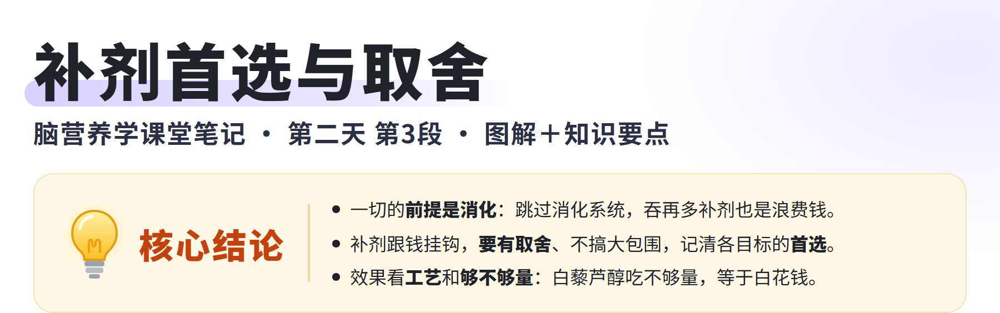
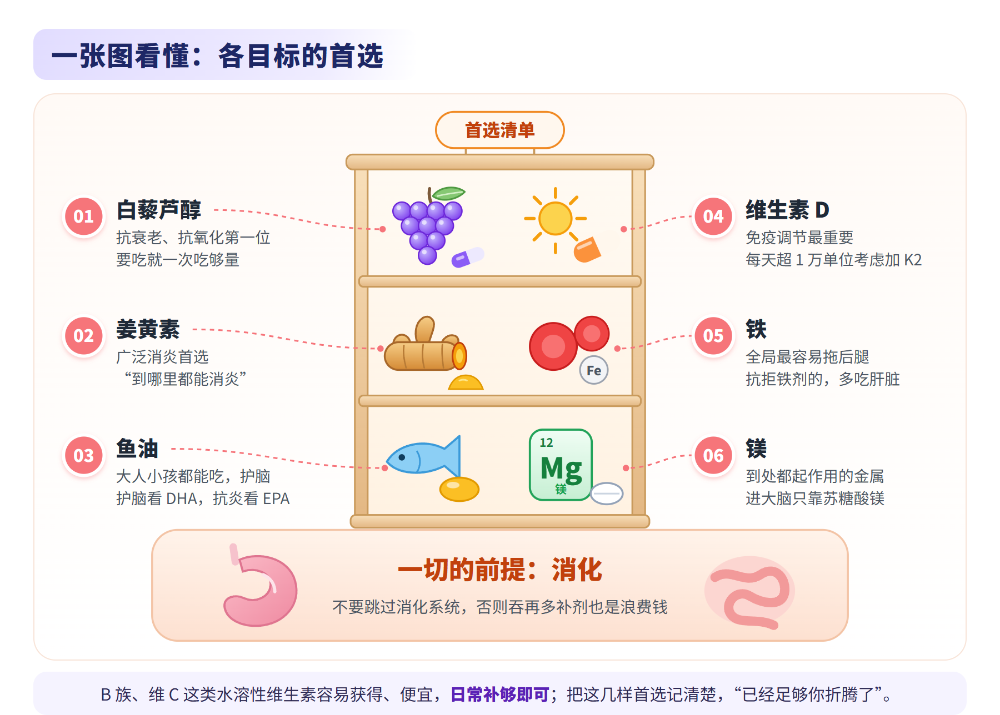
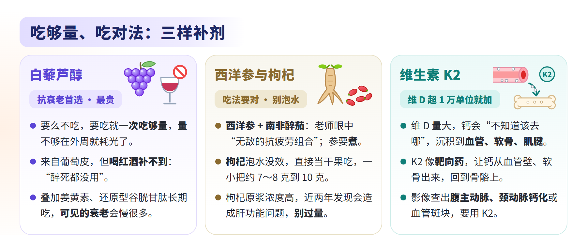
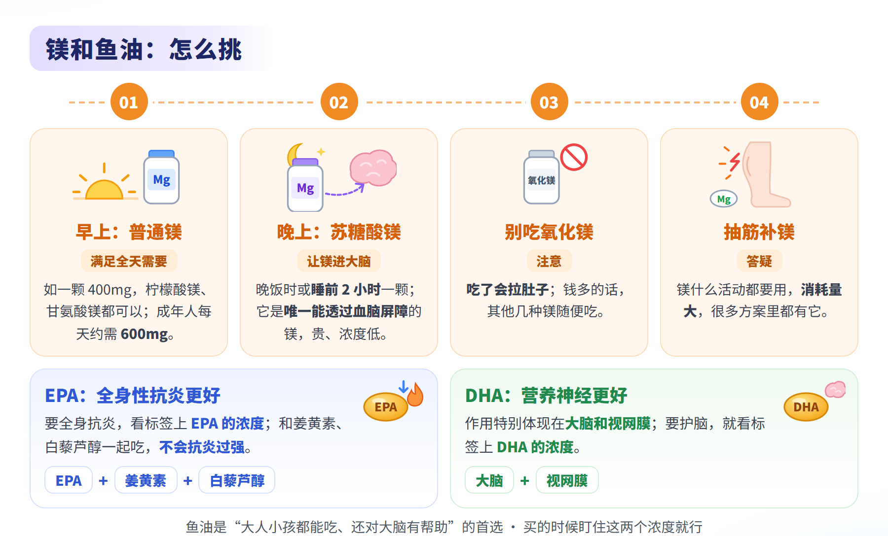
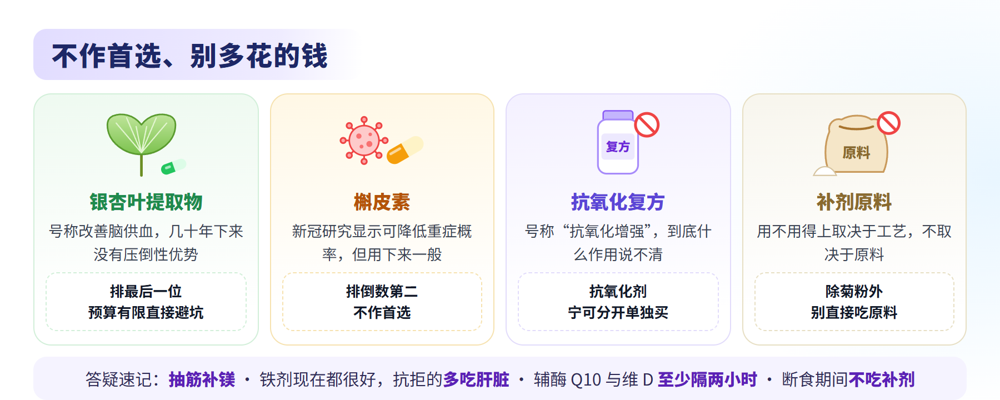
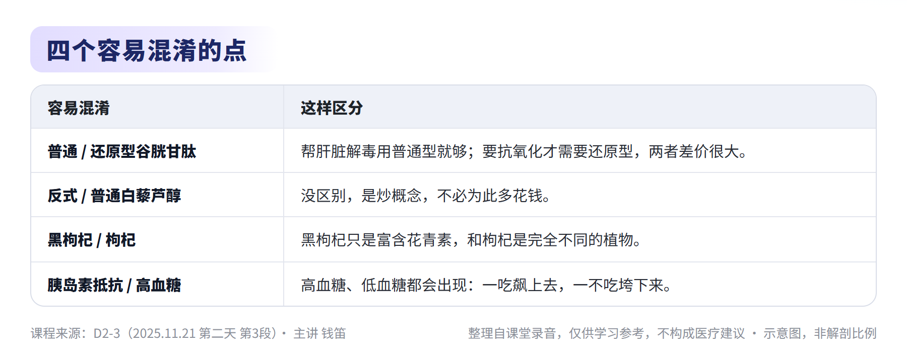
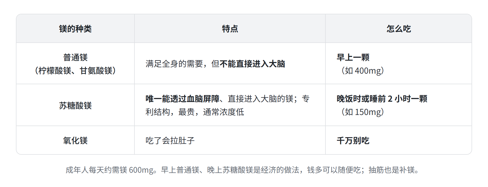
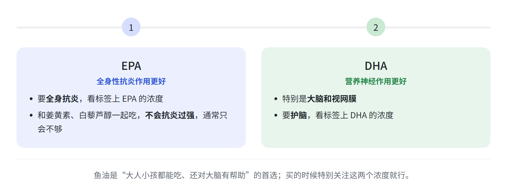
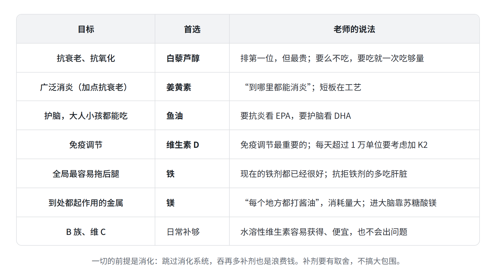

脑营养学 · 第二天 第3段
主题：补剂横向点评、各目标的首选、两天总结与答疑
主讲：钱笛 ｜ 日期：2025 年 11 月 21 日（周五） ｜ 时长：23 分 22 秒
本纪要整理自课堂录音，仅供学习参考，不构成医疗建议。






总结
本段是全课最后一段。老师先补完修胃、维生素 K2 和镁，再对枸杞、西洋参、银杏叶、槲皮素、鱼油、白藜芦醇做横向点评，然后用“先消化、再取舍”总结两天课程、给出各目标的首选，最后答疑。内容如下：
- 收尾补充：修胃、维生素 K2 与镁
- 修胃收尾
- 作用范围：上一段讲的生包菜汁和康复新液，走过整个肠道都有效，但越往下效果越差，集中作用在胃上效果最好；康复新液其他伤口也能用。
- 可以同吃：有学员问能不能和小檗碱一起吃，老师说可以，完全没问题。
- 维生素 K2
- 什么时候加：大家常说补维 D 能促进钙吸收，但补多了就有钙沉积的风险；维 D 每天超过 1 万单位，就要考虑补一点 K2，低于 1 万单位无所谓。
- 为什么要加：维 D 量大以后，钙会“不知道该去哪里”，沉积到血管、软骨、肌腱，甚至在肾盂形成结石；K2 像靶向药，让钙从血管壁、软骨里出来（或不进去），回到骨骼上。
- 影像提示：磁共振或 CT 查出腹主动脉钙化、颈动脉钙化，或血管壁有斑块，要用 K2。
- 凝血不用考虑：这是 K2 的争议点。它不是单一纯净物，几种结构混在一起，抗凝血、促凝血两种作用都有，“早晚要被踢出维生素家族”；讨论凝血时不用考虑它，把它看作让钙去该去地方的东西即可。
- 镁：到处起作用的金属
- 需求量：什么活动都要用镁，消耗量大，成年人每天约需 600mg；这两天反复讲到的东西都是重点。
- 进脑只靠苏糖酸镁：它是唯一能透过血脑屏障、直接进入大脑的镁，专利结构，最贵，通常浓度低。
- 经济吃法：买一瓶普通镁（如 400mg）和一瓶便宜的苏糖酸镁（如 150mg）；早上一颗普通镁满足全天需要，晚饭时或睡前 2 小时一颗苏糖酸镁让镁进大脑。钱多可以随便吃。
- 剂型：在网上找镁补剂，会看到柠檬酸镁、甘氨酸镁、苏糖酸镁等，这几种都可以；千万别吃氧化镁，会拉肚子。
- 修胃收尾

- 几种补剂的横向点评
- 枸杞与西洋参
- 枸杞：传统理论讲补肝肾、明目，现代研究发现确有这个作用；泡水喝没效，要直接吃，一小把约 7～8 克到 10 克，当干果吃。
- 枸杞原浆：近两年发现枸杞原浆会造成一些肝功能问题，不知道是哪里出的问题；原浆浓度比直接吃枸杞高很多，过量可能有风险，现阶段还是正常吃枸杞。
- 黑枸杞不是枸杞：只是富含花青素，没有枸杞的那些成分，是完全不同的植物，不是同一品种的另一种颜色。
- 西洋参 + 南非醉茄：西洋参（花旗参）抗疲劳效果好，加上南非醉茄是老师眼中“无敌的抗疲劳组合”；参类补剂的配料表里有这两样就很好用，其他人参效果一般，长白山人参全是人工种的，“跟萝卜一样”。有学员问参汤能不能泡水，老师说不要泡水，效果不好，要煮。
- 银杏叶与槲皮素：不作首选
- 银杏叶提取物：号称改善脑供血，在欧洲很流行，但用了几十年，对比其他补剂没有压倒性优势，老师自己吃了也没啥反应；几种补剂里排最后一位，钱多才选，预算有限直接避坑。
- 槲皮素：曾被推荐给抽烟的人；新冠期间的群体研究显示，用槲皮素的人发展成重症的概率降低、提前一点几天出院，在临床上算比较有意义的结论。但用下来效果一般，排倒数第二，比银杏好一点。
- 鱼油：EPA 还是 DHA
- 分工：EPA 的全身性抗炎作用更好；DHA 的营养神经作用更好，特别是大脑和视网膜。
- 看标签：要全身抗炎，看标签上 EPA 的浓度；要护脑，看 DHA 的浓度。
- 不会抗炎过强：EPA、姜黄素、白藜芦醇一起吃，通常只会不够，不会抗炎过强。
- 枸杞与西洋参

- 白藜芦醇与抗衰老
- 白藜芦醇：抗衰老首选
- 定位：抗炎效果非常好，任何地方都能抗炎；除非姜黄素的工艺结构有大的变化，否则白藜芦醇仍排第一，但也最贵。
- 要吃就吃够量：要么不吃，要吃就一次吃够量；每次都吃不够，在外周就耗光了，钱花了没效果。吃得越多越好，但受成本限制，剂量见课件。
- 喝红酒补不到：白藜芦醇来自葡萄皮，但靠喝红酒“要喝一三轮车，醉死都没用”。
- 别多花冤枉钱：反式白藜芦醇与普通的没区别，是炒概念（老师认为还原型辅酶 Q10 也一样）；号称“抗氧化增强”的白藜芦醇复方，到底什么作用说不清，不建议吃，抗氧化剂宁可分开单独买。
- 抗衰老组合
- “最猛”的用法：白藜芦醇叠加姜黄素、还原型谷胱甘肽每天吃，至少可见的衰老进程会慢很多，老师说“这个是可以验证出来的”。
- 案例：一位多年吞补剂的老师，十年前的照片和现在看起来一样；这几年工作强度放大了好多倍，仍然扛得住。
- 谷胱甘肽怎么选：要抗氧化需要还原型，帮肝脏解毒用普通型就可以；两者差价很大，有钱可以两种一起吃。
- 白藜芦醇：抗衰老首选
- 两天总结：先消化，再取舍
- 一切的前提是消化
- 别跳过消化：不要把消化系统跳过去，不然后面吞再多补剂也是浪费钱。
- 不搞大包围：补剂跟钱挂钩，要有所取舍；大包围浪费的就是钱。
- 原料别直接吃：中国是补剂原料出口大国，原料大多很便宜，但身体能不能用得上取决于工艺，不取决于原料；除菊粉外（原料和成品只是包装不同），别直接吃原料，容易出事。
- 各目标的首选
- 抗衰老、抗氧化：白藜芦醇，第一位。
- 广泛消炎：姜黄素，“到哪里都能消炎”，还带点抗衰老。
- 护脑：鱼油，小孩大人都能吃，还对大脑有帮助。
- 免疫调节：维生素 D，最重要的免疫调节剂。
- 铁与镁：对全局来说最容易拖后腿的是铁；金属里到处都起作用、“每个地方都打酱油”的是镁。把这几样记清楚，“已经足够你折腾了”。
- B 族与维 C：水溶性维生素容易获得、补剂多、不会出问题、便宜，日常补够即可；B 族里课上专门讲的只有 B9（叶酸）和 B12。
- 去实践
- 观察窗口要长：近两期才陆续有学员反馈吃了补剂后变好，之前几期反馈不多。
- 先搞定自己：老师很多东西先在自己身上试过，自己搞定了，再去服务客户会好很多。
- 一切的前提是消化

- 答疑
- 代谢、睡眠与疲劳
- 胰岛素抵抗：高血糖、低血糖都会出现；糖尿病人到后期一吃血糖就飙上去、一不吃就垮下来，所以容易低血糖。
- 睡眠浅、一晚做很多梦：老师的解释是大脑抑制不下来。
- 运动十几分钟就累、休息两三分钟又恢复：信息太少，老师无法判断。
- 怎么吃
- 补铁：现在的铁剂都已经很好，没有特别推荐；嫌麻烦就用网上现成的铁剂，液体、片剂都行；抗拒铁剂的多吃肝脏，如炒猪肝。
- 抽筋：补镁。
- 断食期间：不要卡着时间点吃补剂，流程由自己控制，比如断食中吃鱼油就“完蛋了”，等断食结束再补；药物辅料里的蔗糖一般是微量，少量没关系，“吃一把”就出大事。
- 辅酶 Q10 与维生素 D：分开吃，至少间隔两小时。
- 代谢、睡眠与疲劳
章节速览
时间为本段录音内的时间点。
00:00修胃收尾与维生素 K2
上一段讲的生包菜汁、康复新液集中作用在胃上效果最好，可以和小檗碱一起吃。维生素 D 每天超过 1 万单位要考虑加 K2，它像靶向药一样让钙从血管、软骨回到骨骼；K2 抗凝、促凝两种作用都有，讨论凝血时不用考虑它。
03:01镁：普通镁打底，苏糖酸镁进脑
镁什么活动都要用，成年人每天约需 600mg。苏糖酸镁是唯一能透过血脑屏障的镁，但贵、浓度低；经济做法是早上一颗普通镁、晚饭时或睡前 2 小时一颗苏糖酸镁，千万别吃氧化镁。
04:33枸杞、黑枸杞与西洋参
枸杞补肝肾、明目确有作用，但泡水没效，要直接当干果吃；枸杞原浆浓度高，近两年发现会造成肝功能问题。黑枸杞是完全不同的植物。西洋参加南非醉茄是老师眼中“无敌的抗疲劳组合”，参要煮，不要泡水。
06:40银杏叶与槲皮素：不作首选
银杏叶提取物号称改善脑供血，流行几十年却没有压倒性优势，排最后一位。槲皮素在新冠期间的群体研究中能降低重症概率、提前一点几天出院，但用下来效果一般，排倒数第二。
08:50EPA 与 DHA：买鱼油看标签
EPA 全身性抗炎更好，DHA 营养神经更好，特别是大脑和视网膜；要抗炎看标签上 EPA 的浓度，要护脑看 DHA 的浓度。EPA、姜黄素、白藜芦醇一起吃不会抗炎过强，通常只会不够。
09:47白藜芦醇：要吃就一次吃够量
白藜芦醇任何地方都能抗炎，除非姜黄素的工艺有大的变化，否则仍排第一，但也最贵。要么不吃，要吃就一次吃够量，否则在外周就耗光了；它来自葡萄皮，但喝红酒补不到。
11:40抗氧化剂分开买与抗衰老组合
号称“抗氧化增强”的白藜芦醇复方不建议吃，抗氧化剂宁可分开单独买。白藜芦醇叠加姜黄素、还原型谷胱甘肽每天吃，至少可见的衰老进程会慢很多，老师举了一位多年吞补剂、十年容貌不变的老师为例。
13:57两天总结：先消化，再按首选取舍
一切的前提是消化，跳过消化系统，吞再多补剂也是浪费钱；补剂要有取舍，不搞大包围。抗衰老抗氧化首选白藜芦醇，广泛消炎首选姜黄素，护脑首选鱼油，免疫调节首选维生素 D，最易拖后腿的是铁，到处起作用的是镁；B 族、维 C 日常补够即可。
16:32答疑：补剂原料、反式白藜芦醇与胰岛素抵抗
除菊粉外别直接吃补剂原料，身体用不用得上取决于工艺。反式白藜芦醇与普通的没区别，是炒概念。胰岛素抵抗高血糖、低血糖都会出现，糖尿病人后期一吃飙上去、一不吃垮下来，所以容易低血糖。
18:12答疑：多梦、补铁、抽筋与谷胱甘肽
睡眠浅、多梦是大脑抑制不下来。现在的铁剂都已经很好，嫌麻烦用现成的液体或片剂，抗拒铁剂的多吃肝脏；抽筋补镁。谷胱甘肽帮肝解毒用普通型，要抗氧化才用还原型，两者差价很大。
19:43答疑：运动易累与断食期间的补剂
运动十几分钟就累、休息几分钟又恢复，信息太少，老师无法判断。断食期间不要卡着时间点吃补剂，等断食结束再补，药物辅料里的微量蔗糖没关系。辅酶 Q10 与维生素 D 分开吃，至少间隔两小时。
21:56课程收尾：去实践，先搞定自己
更多问题建议去实践：近两期才陆续有学员反馈吃补剂后变好，观察窗口要长一点。原则仍是不搞大包围；老师很多东西先在自己身上试过，搞定了自己再去服务客户会好很多。
关键内容
本段为讲座，没有需要决策的事项。关键内容如下：
- 一切的前提是消化：跳过消化系统，后面吞再多补剂也是浪费钱。
- 补剂要有取舍：不搞大包围；抗衰老抗氧化首选白藜芦醇，广泛消炎首选姜黄素，护脑首选鱼油，免疫调节首选维生素 D，最易拖后腿的是铁，到处起作用的是镁。
- 吃够量、看工艺：白藜芦醇要吃就一次吃够量；除菊粉外不直接吃原料，复方和“反式”不必多花钱。
- 镁：成年人每天约需 600mg；早上普通镁、晚上苏糖酸镁（唯一能进大脑），别吃氧化镁；抽筋补镁。
- 鱼油看标签：全身抗炎看 EPA 的浓度，护脑看 DHA 的浓度。
- 维生素 K2：维 D 每天超过 1 万单位要考虑加 K2，让钙回到骨骼，不沉积在血管和软骨。
- 服用细节：辅酶 Q10 与维 D 至少间隔两小时；断食期间不吃补剂；谷胱甘肽护肝用普通型，抗氧化用还原型。
金句时刻
「一切的前提是消化，不要把消化系统跳过去，不然你后面吞再多的补剂，也是浪费钱。」
—— 两天课程的落脚点：消化是地基，补剂只是建在上面的东西。
「你要么就不要吃，要吃就一次吃够量，这样钱没白花。」
—— 说的是白藜芦醇，也适用于所有贵补剂：量不够在外周就耗光了，省下的反而是浪费。
「很多东西我是在自己身上试过的，自己搞定了自己，再去搞客户会好很多。」
—— 全课最后的嘱咐：方案先在自己身上验证，再用到客户身上。